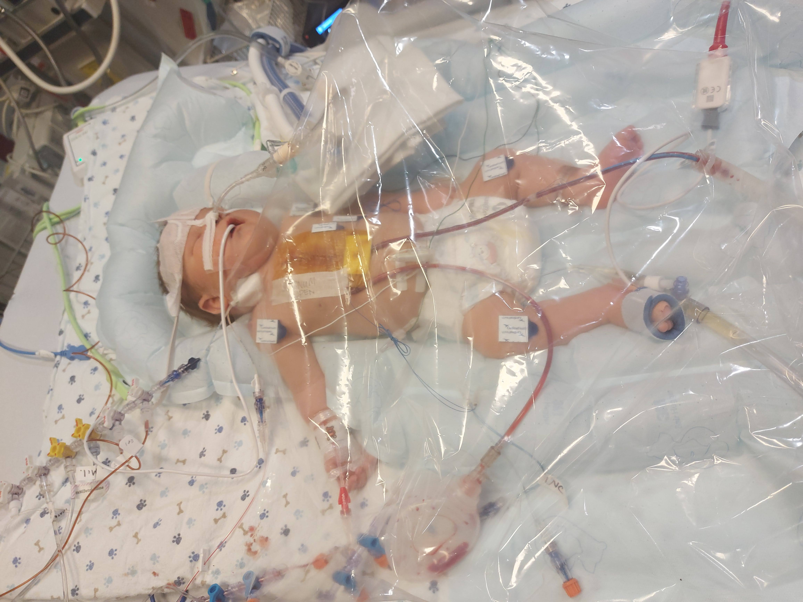
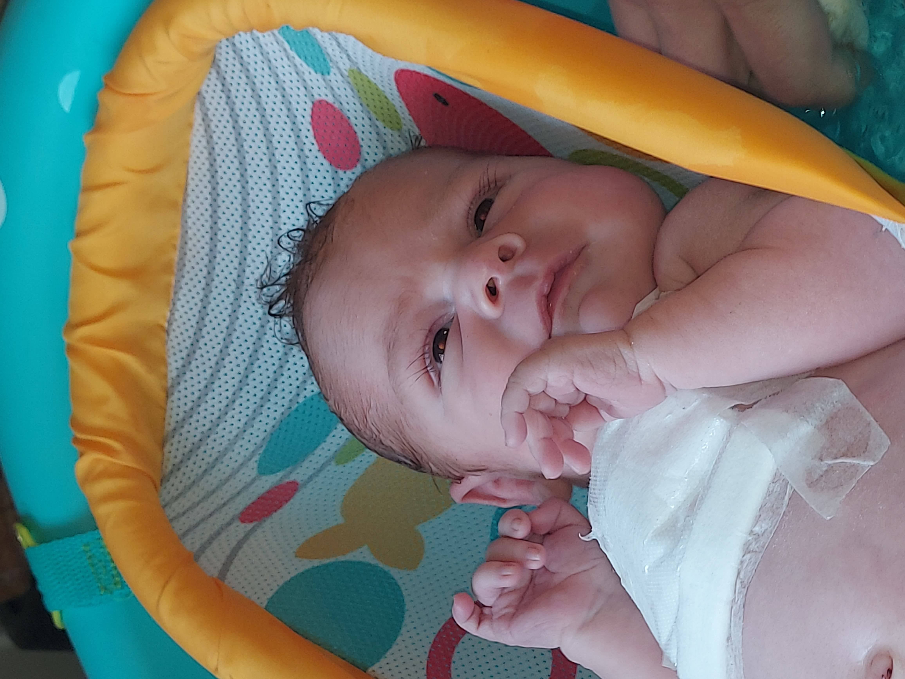
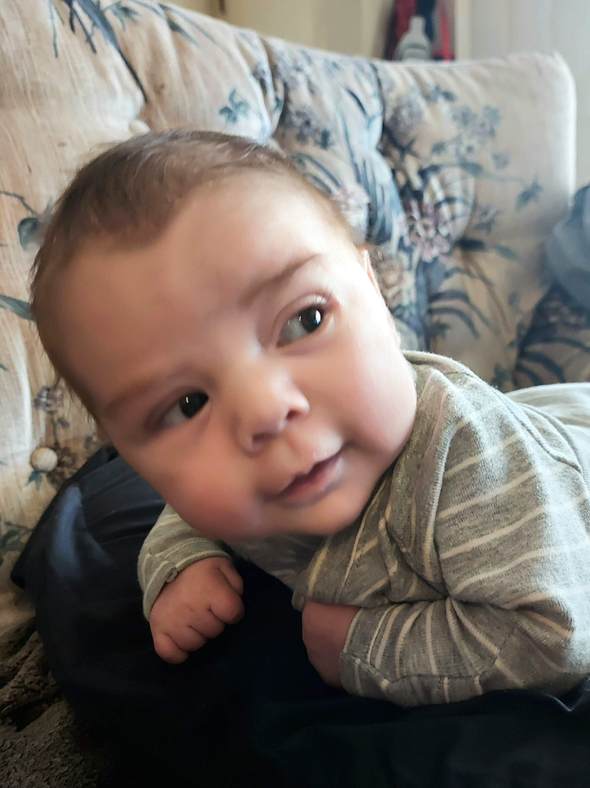
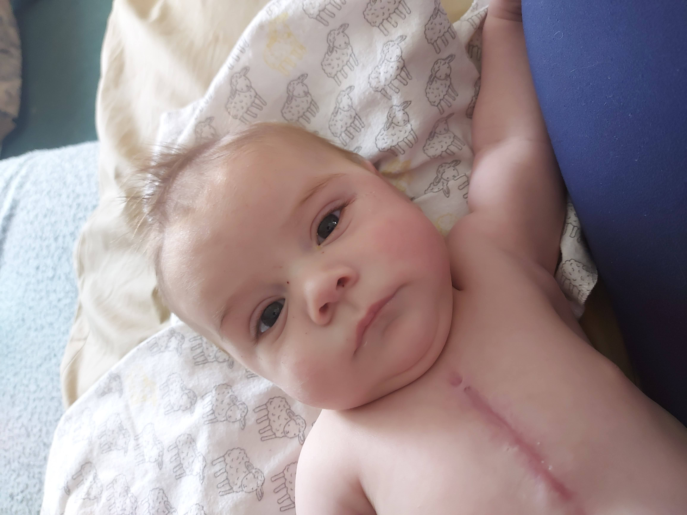

Our Story
Diagnosis and Pregnancy
My Birthing Experience
The Norwood Procedure
Interstage
  The Glenn Procedure

Tony eats his Fruit Loops with enthusiasm.
If you would like to know more about Hypoplastic Left Heart Syndrome, you can browse the follow resources: